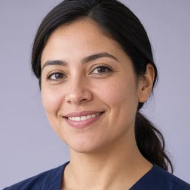
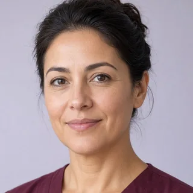

Salud en casa
para toda tu familia
Enfermeras y TENS que van a tu casa, exámenes y tu ficha de salud en un mismo lugar. Cuéntanos qué necesitas.
Reservar una atención Enfermería
Enfermeríaa domicilio
laboratorios
y sueros
recordatoriosReembolsado$18.840PagadoReembolso
e Isapre

Camila RojasMañana · 08:00Desde $15.000
Valentina MoralesJue · 08:30Desde $18.000Una enfermera
en tu casa,
cuando la necesitas
Te mostramos a las enfermeras y TENS de tu comuna con hora disponible, su precio y sus reseñas. Revisamos su registro y antecedentes antes de que atiendan. Eliges, pagas y sigues su llegada en el mapa.
Seleccionamos 5 exámenes
Según la orden de tu médicoLaboratorios cerca de ti
Tus exámenes,
en casa o en
el laboratorio
Elige entre 655 exámenes, sube la foto de tu orden o pide ayuda para elegir. Luego decides: toman la muestra en tu casa o vas a un laboratorio cercano.
Su ficha y
sus controles,
al día
Cada profesional anota en la misma ficha: curaciones, signos vitales, remedios y alergias. Activa los recordatorios de remedios y controles, y agenda el examen cuando toca.
Tu reembolso
y tu Isapre,
sin trámites
Vincula tu Isapre una vez y el agente de Cuidapp envía la boleta, la orden médica y tu carnet después de cada atención; la gestión cuesta $3.500. Y si quieres cambiarte, asesores de Isapre te envían su cotización.
Sujeto a las condiciones de cada Isapre. Información general, no es asesoría legal ni financiera.
Todo lo que
cuidamos
en casa
Inyecciones, vitaminas y sueros, curaciones, cuidado de adulto mayor y pacientes postrados, turnos, postoperatorio y educación a la familia.
Preguntas
frecuentes
¿Quiénes me atienden?
Enfermeras y TENS. Antes de atender revisamos su registro en la Superintendencia de Salud, su identidad y sus antecedentes. En su perfil ves su precio, su experiencia y las reseñas de otras familias.
¿Necesito orden médica para hacerme exámenes?
No es obligatoria. Puedes elegir tus exámenes, subir la foto de tu orden para que los seleccionemos por ti, o pedir ayuda. Para inyecciones y algunos tratamientos sí te pediremos la receta.
¿Cómo pago? ¿Hay descuento?
Pagas con tarjeta al reservar y antes de confirmar ves el precio total. En tu primera atención tienes 15% de descuento, hasta $20.000, con el código CUIDA15.
¿Cómo funciona el reembolso automático?
Vinculas tu Isapre una vez y el agente de Cuidapp envía la boleta, la orden médica y tu carnet después de cada atención. Sigues cada solicitud hasta el pago. La gestión cuesta $3.500 y está sujeta a las condiciones de cada Isapre. Información general, no es asesoría legal.
¿Eres profesional o aliado?
 Enfermería y TENSPostula hoy. Kinesiología, psicología, telemedicina y nutrición, muy pronto.
Enfermería y TENSPostula hoy. Kinesiología, psicología, telemedicina y nutrición, muy pronto. Laboratorios · Súmate gratisAparece en «Laboratorios cerca de ti».
Laboratorios · Súmate gratisAparece en «Laboratorios cerca de ti». Asesores de Isapre · Con plan mensualRecibe solicitudes de cotización.
Asesores de Isapre · Con plan mensualRecibe solicitudes de cotización. FarmaciasEntrega de medicamentos, muy pronto.
FarmaciasEntrega de medicamentos, muy pronto.